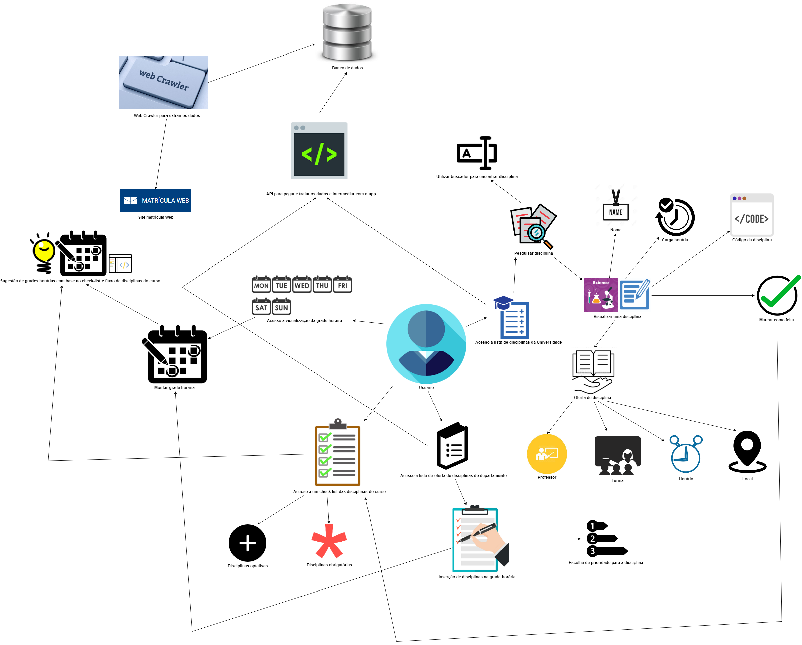

Rich Picture
Histórico de revisões
| Data | Versão | Descrição | Autor(es) |
|---|---|---|---|
| 23/03/2019 | 0.1 | Iniciando o documento | Guilherme Aguiar |
| 24/03/2019 | 0.2 | Adição dos tópico Sumário, Introdução e Referências | Daniel Maike |
| 24/03/2019 | 0.3 | Adição do RichPicture de usuário | Daniel Maike |
Sumário
1. Introdução
2. RichPictures
3. Referencias
1. Introdução
O Rich Picture é uma técnica de requisitos de software, elaborada na fase de pré-rastreabilidade. São desenho feitos a mão ou digitalmente a fim de expressar ideias, que representam um subsistema de um sistema maior. É um artefato considerado informal e muito útil na identificação das partes envolvidas, a fim abrir espaço para discussões e ser uma forma de compreender o problema amplamente. [1] [2]
2. RichPictures
Usuário
Rich Picture com foco no usuário e nas ações que ele pode realizar no sistema.
Versão 1.0

Versão 2.0
Versão 3.0

Aplicativo e usuário
Rich picture que descreve como o aplicativo processa os dados e disponibilza ao usuário.
Versão 1.0

3. Referências
[1] Slide 10 da aula 04 da disciplina de Requisitos de Software da UnB-Gama - Professores: Milene Serrano e Maurício Serrano
[2] Slides 15, 16 e 17 da aula 02 da disciplina de Arquitetura e Desenho de Software da UnB-Gama - Professora: Milene Serrano
[3] https://rockcontent.com/blog/web-crawler/
[4] https://gitlab.com/atlasds/ds2017